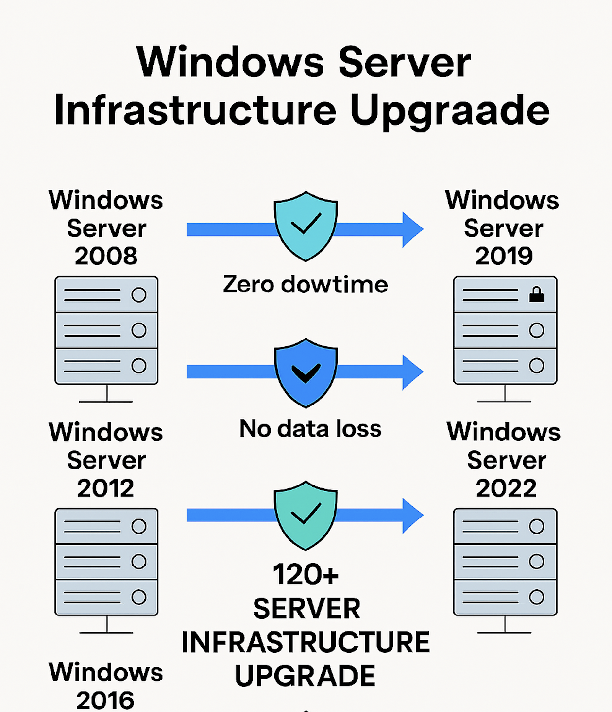

Challenge
Over 100 servers—including domain controllers—were running unsupported versions of Windows Server (2008, 2009, and 2016). The goal was to upgrade all infrastructure to Windows Server 2019 and 2022 without disrupting production or risking data loss, while also deprecating legacy systems no longer in use.
Tools & Technologies
- Windows Server 2019 & 2022
- In-place and side-by-side upgrade strategies
- Hyper-V & VM Snapshots
- Backup & Recovery Validation
- Active Directory Domain Services (AD DS)
Implementation
- Audited all servers and categorized by OS version, role, and criticality
- Planned upgrade paths: in-place for low-risk, side-by-side for critical systems
- Backed up all systems and validated recovery procedures
- Upgraded domain controllers from Server 2016 to 2019 and 2022
- Executed phased upgrades across production servers with zero downtime
- Identified and decommissioned unused or legacy servers no longer required
- Validated services, roles, and data integrity post-upgrade
Architecture Diagram
Impact
- Eliminated unsupported OS versions across the environment
- Improved security posture and compliance with Microsoft support standards
- Achieved 100% upgrade success rate with no production impact
- Modernized domain controller infrastructure to Server 2019 and 2022
- Reduced infrastructure sprawl by deprecating legacy and unused servers